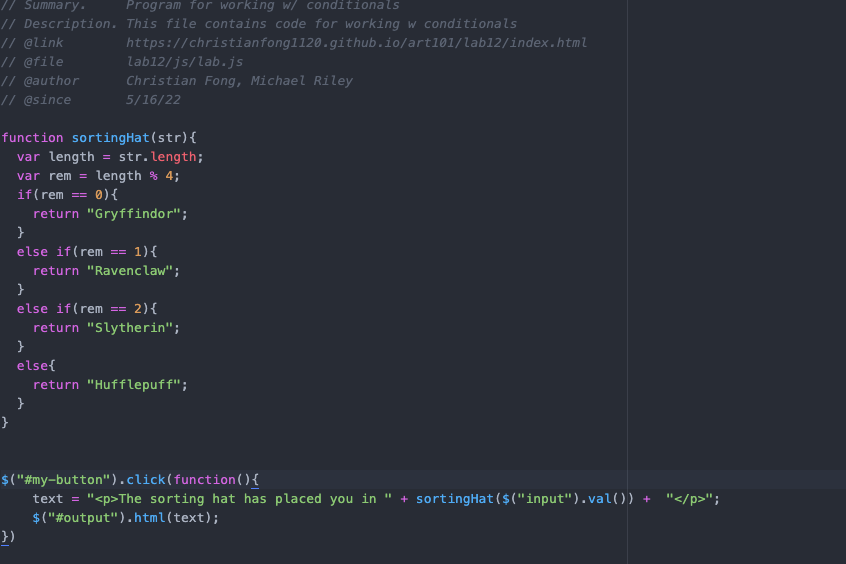

Challenge
This lab involved working with conditionals and creating a sorting hat function in javascript.
Problems
This lab presented us with no problems as Christian has prior programming experience. This was very synonymous with past object oriented programming he has done in the past.
Results
We ran into 0 issues with this lab and created the javascript file with little difficulty. We successfully used JQuery to fetch html, and pass the elements to functions utilizing conditionals.
Output
Enter a name to be placed in the appropriate house!
Tour of code
We first started by creating the sorting hat function using the basic template of the harry potter houses. From there we created a listening event for our created html's button using Jquery. From there we fetched the data from our form. We then used Jquery to change or output div's inner html to the a string containing what house the user is placed in.